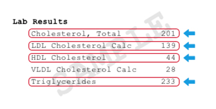

This site is intended for US Consumers
Call to see if you qualify for this study (xxx) xxx-xxxx
To see if you qualify for the study or to ask questions, call (xxx) xxx-xxxx.
To complete Part 1, you will need health numbers:
Total Cholesterol, HDL and LDL Cholesterol, Triglycerides.
You can check your recent lab report (from within the past 12 months or get them from your doctor or patient portal. They will often appear like this.
If you don't have a recent report or a doctor, there are low-cost options that do not require a doctor visit:
If you need assistance with reading your lab report, talk to a doctor or call (xxx) xxx-xxxx